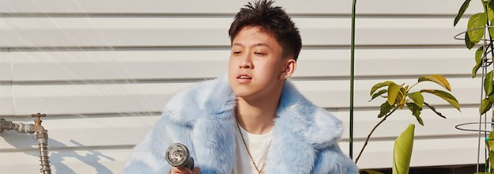

"Rich Brian"

Autobiography
About:
Brian Imanuel Soewarno (born 3 September 1999), known professionally as Rich Brian (formerly Rich Chigga), is an Indonesian rapper, singer, songwriter, and record producer.
Brian Imanuel Soewarno was born on September 3, 1999, in Jakarta, Indonesia, to Heru Soewarno and Megawati Purnomo.
He has one older brother named Roy Leonard Soewarno and two older sisters named Stephanie and Sonia Eryka Soewarno. He is of mixed Chinese and Manadonese descent.
History by Rich Brian
Chorus
We got history (history)
Got me feeling the nostalgia
When you look at me (look at me)
Thinking 'bout what could have happened
Or what could've been
Finally a face I know, ain't that a sight to see?
Take my time then take your clothes off
One more time, maybe
Actin' like you don't recall, it ain't impressin' me
Didn't come to see your friends, I know you came for me
Like your dress, but you fit better in my wrinkled tee
We moved on to newer things, but we got history
Verse 1
Put my feelings all aside
Don't know how to make it right
Pictures poppin' on my mind
All these occasions
Let's work it out with me
I don't think it hurts to give another try on it
Ain't nobody here know you like I do
Ask all your friends if they know 'bout your size of shoes
How you like to cry when you laugh, when you off the booze
I moved on but I still remember a thing or two
I know you said "gimme a hug", and I said "gimme a break"
I wasn't trying my best, all the mistakes that I made
I'm learning that it ain't the right move
Learn from my mistakes, ain't that what the adults do?
Chorus
We got history (History)
Got me feeling the nostalgia when you look at me (Look at me)
Thinking 'bout what could've happened or what could've been
Finally a face I know, ain't that a sight to see?
Take my time then take your clothes off
One more time, maybe
Actin' like you don't recall, it ain't impressin' me
Didn't come to see your friends, I know you came for me
Like your dress, but you fit better in my wrinkled tee
We moved on to newer things, but we got history
Verse 2
Ayy, ayy, yuh
Bet you got nobody 'round to make yo' day better
Sun brighter, don't got too much time, so girl, let's fuck now
And talk later, put your pride aside and let me in
You know I got better since
You so good at self control, but maybe now it's time for change
I've been alone for so long, got the one
Didn't realize good ones exist in the world 'til I lost one
Eye for an eye makes the whole world go blind
Things I would give to feel your lips for the last time
Go and hang with your friends, I'll put this bullshit to end
I rained on your parade and I just wish you the best
I think it's time for me to bounce soon
I just wish I had someone to say, "I'm home," to
Chorus
We got history (history)
Got me feeling the nostalgia
When you look at me (look at me)
Thinking 'bout what could have happened
Or what could've been
Finally a face I know, ain't that a sight to see?
Take my time then take your clothes off
One more time, maybe
Actin' like you don't recall, it ain't impressin' me
Didn't come to see your friends, I know you came for me
Like your dress, but you fit better in my wrinkled tee
We moved on to newer things, but we got history